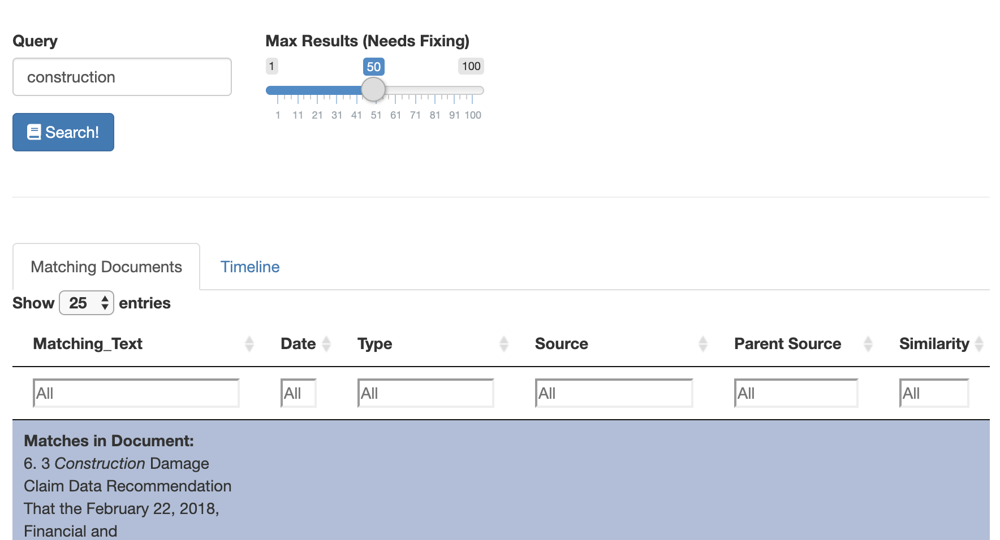
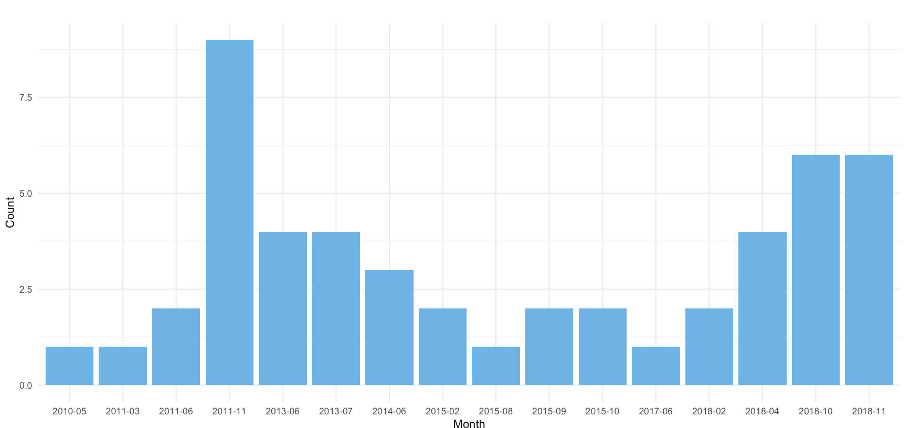

class: center, middle # Elastic Cloud on Kubernetes --- class: center, middle # Introduction  Jared Rewerts Computer Engineer City of Edmonton --- # Agenda 1. Kubernetes 1. Operators 1. Installing Elastic Cloud on K8s 1. Indexing Documents 1. Searching 1. Questions ---  - we'll be running everything on Google Kubernetes Engine - check out Docker's local Kubernetes for an easy test environment --- # Operators - framework for managing lifecycle of stateful applications ## Help with - upgrading to new versions - scaling cluster capacity - cluster config - scheduling backups --- # Installing Elastic Cloud on K8s #### Install the CRD and Roles ``` bash kubectl apply -f https://download.elastic.co/downloads/eck/0.9.0/all-in-one.yaml ``` --- # Installing Elastic Cloud on K8s #### Create a cluster ``` bash cat <<EOF | kubectl apply -f - apiVersion: elasticsearch.k8s.elastic.co/v1alpha1 kind: Elasticsearch metadata: name: quickstart spec: version: 7.2.0 nodes: - nodeCount: 1 config: node.master: true node.data: true node.ingest: true http: tls: selfSignedCertificate: subjectAltNames: - ip: 127.0.0.1 - dns: localhost EOF ``` --- # Installing Elastic Cloud on K8s #### Get your credentials Elasticsearch comes with an admin user/password built in. ``` bash PASSWORD=$(kubectl get secret quickstart-es-elastic-user -o=jsonpath='{.data.elastic}' | base64 --decode) ``` --- # Installing Elastic Cloud on K8s #### Forward your cluster's service The ES operator only creates ClusterIP services. This means we can't access them yet. ``` bash kubectl port-forward service/quickstart-es-http 9200 ``` --- # Installing Elastic Cloud on K8s #### Get our self-signed certificate ``` bash kubectl get secret quickstart-es-http-certs-public -o=jsonpath="{$.data['*']}" | base64 --decode > tls.crt ``` --- # Installing Elastic Cloud on K8s #### Check the health ``` bash kubectl get elasticsearch ``` ### Or ``` bash curl --cacert tls.crt -u "elastic:$PASSWORD" "https://localhost:9200/_cat/health?v" ``` ###### We're validating this request with our self-signed certificate! --- # Indexing documents #### Our data ``` bash head -1 council_reports.csv ``` #### gives us ``` bash id,date,source_url,source_title,parent_source_url,parent_source_title,text ``` --- # Indexing documents #### Use Python to import the data! ``` bash This python utility helps with uploading CSV files of any size to Elasticsearch. This has been tested up to ~2GB. Currently, all fields in the document are indexed and treated as text. In the future, controlling how the fields are indexed from the command line would be a handy feature. Example on localhost python csv-to-elasticsearch.py -i my-index -c localhost:9200,localhost:9201 -f my.csv Example over https python csv-to-elasticsearch.py -i my-index -c https://sub.domain.ca/es -f my.csv Required fields -i (--index) The index to write documents to. -c (--connect) The Elasticsearch host string. Ex. '-c localhost:9200,localhost:9201,localhost:9202' -f (--file) The CSV file. Optional fields -h (--help) Print this helpful text field. -u (--user) The user to connect to Elasticsearch as. -p (--password) The user's password. -x (--certificate) The certificate to use to connect to the cluster. ``` --- # Indexing documents #### Import our data ``` bash python src/csv-to-es.py -i council_reports -c https://localhost:9200 -f council_reports.csv -u elastic -p $PASSWORD -x tls.crt ``` --- # Indexing documents #### Check on our new index ``` bash curl --cacert tls.crt -u "elastic:$PASSWORD" "https://localhost:9200/_cat/indices?v" ``` --- # Searching #### Simple search ``` bash curl --cacert tls.crt -u "elastic:$PASSWORD" "https://localhost:9200/council_reports/_search?q=social%20benefit" ``` --- # Searching #### Response ``` json { "took": 31, "timed_out": false, "_shards": { "total": 1, "successful": 1, "skipped": 0, "failed": 0 }, "hits": { "total": { "value": 249, "relation": "eq" }, "max_score": 7.006954, "hits": [{truncated...}] } } ``` --- # Searching #### Response -> Hits ``` json [ { "_index": "council_reports", "_type": "_doc", "_id": "NwVIHG0BQlDYBMctvNOx", "_score": 7.006954, "_source": { "id": "799", "date": "20130522000000", "source_url": "http://sirepub.edmonton.ca/sirepub/view.aspx?cabinet=published_meetings&fileid=224899", "source_title": "Community Investment Operating Grant - Program Pri - 2013CAAB09-CIOG-Report 2014-2016 Priorities Guidelines-ToCSC.doc", "parent_source_url": "http://sirepub.edmonton.ca/sirepub/mtgviewer.aspx?meetid=1005&doctype=AGENDA", "parent_source_title": "Community Investment Operating Grant - Program Priorities and Guidelines for 2014-2016", "text": "{truncated}... as outlined in Attachment 1 of the May 14, 2013, Community Services Advisory Board report 2013CAAB09, be approved. \t Report Summary \t This report recommends funding Program Priorities and Guidelines for not-for-profit Social Services, {truncated...}" } } ] ``` --- # Searching #### An example application A simple search [engine](http://localhost:8068/).  ###### Courtesy of Roman Eisner --- # Searching #### An example application  ###### Courtesy of Roman Eisner --- # References #### Profile `https://github.com/j-rewerts` #### Presentation `{GH}/elastic-cloud-on-k8s.prezzy` #### Elastic Cloud on Kubernetes `https://github.com/elastic/cloud-on-k8s`